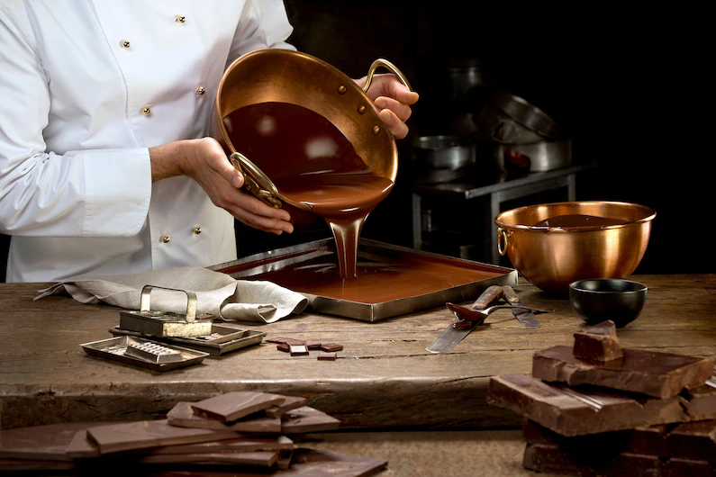

This website has been created by Maram
Top chocolatiers generally work with couverture (first-rate chocolate containing a high percentage of cocoa butter) to make their creations, versus fresh cocoa beans, although an increasing number now experiment with bean to bar. Some makers even grow their own cacao beans. Direct contact between growers and makers is the best-case scenario for sustainable, or at the very least fair trade, chocolate.